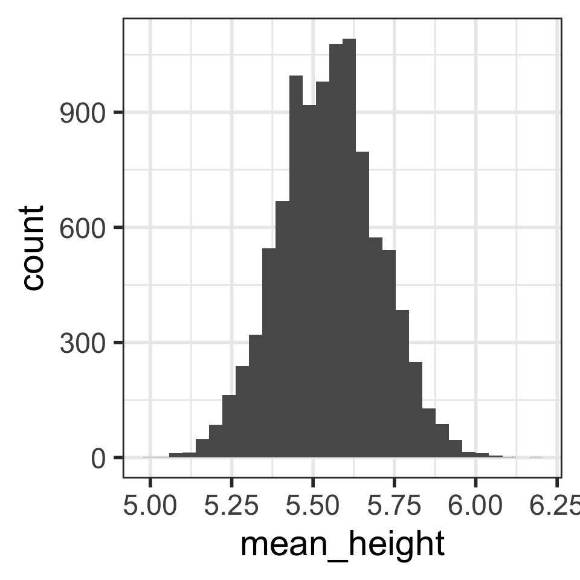
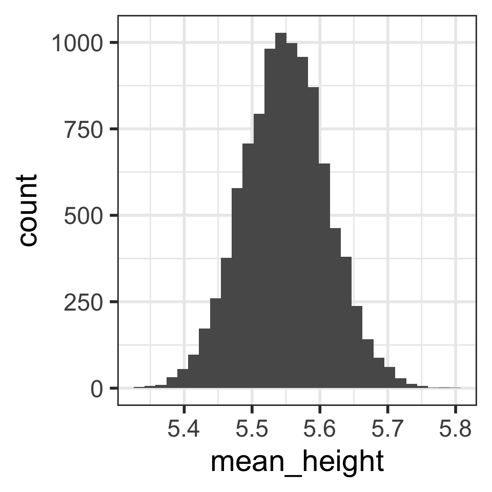
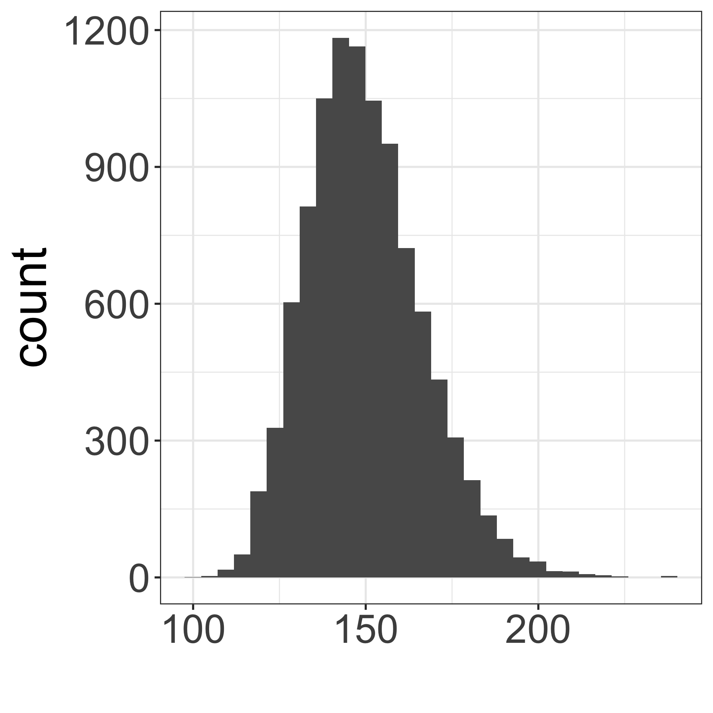
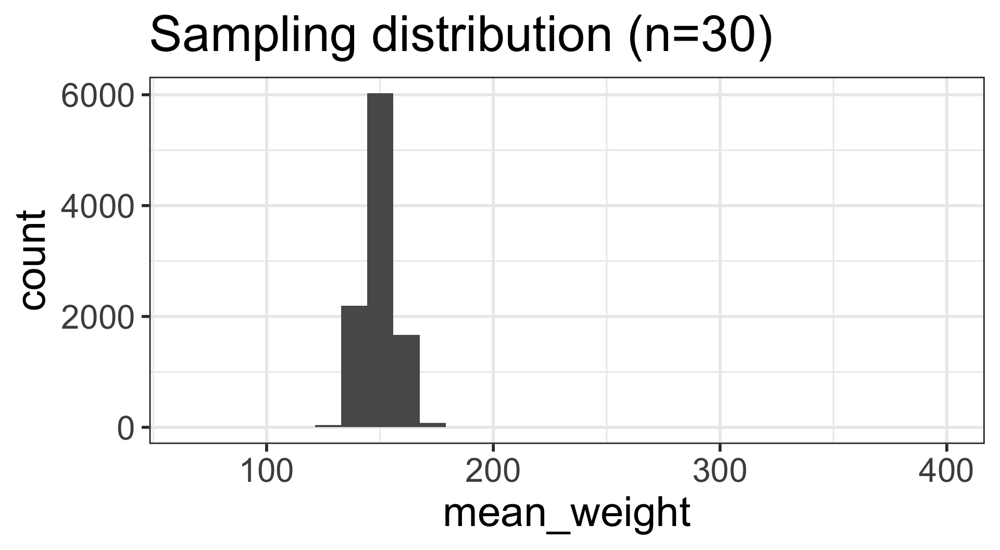

library(oibiostat)
data("yrbss") #load the data
# ?yrbssLesson 8: Variability in estimates
Week 1
Where are we?

Goals for today
Section 4.1
- Sampling from a population
- population parameters vs. point estimates
- sampling variation
- Sampling distribution of the mean
- Central Limit Theorem
MoRitz’s tip of the day: add a code pane in RStudio
Do you want to be able to view two code files side-by-side?
You can do that by adding a column to the RStudio layout.

See https://posit.co/blog/rstudio-1-4-preview-multiple-source-columns/ for more information.
Population vs. sample (from section 1.3)
(Target) Population
- group of interest being studied
- group from which the sample is selected
- studies often have inclusion and/or exclusion criteria
Sample
- group on which data are collected
- often a small subset of the population
Simple random sample (SRS)
- each individual of a population has the same chance of being sampled
- randomly sampled
- considered best way to sample

Population parameters vs. sample statistics
Population parameter
Sample statistic (point estimate)
Our hypothetical population: YRBSS
Youth Risk Behavior Surveillance System (YRBSS)
- Yearly survey conducted by the US Centers for Disease Control (CDC)
- “A set of surveys that track behaviors that can lead to poor health in students grades 9 through 12.”1
- Dataset
yrbssfromoibiostatpacakge contains responses from n = 13,583 participants in 2013 for a subset of the variables included in the complete survey data
dim(yrbss)[1] 13583 13names(yrbss) [1] "age" "gender"
[3] "grade" "hispanic"
[5] "race" "height"
[7] "weight" "helmet.12m"
[9] "text.while.driving.30d" "physically.active.7d"
[11] "hours.tv.per.school.day" "strength.training.7d"
[13] "school.night.hours.sleep"Getting to know the dataset: glimpse()
glimpse(yrbss) # from tidyverse package (dplyr)Rows: 13,583
Columns: 13
$ age <int> 14, 14, 15, 15, 15, 15, 15, 14, 15, 15, 15, 1…
$ gender <chr> "female", "female", "female", "female", "fema…
$ grade <chr> "9", "9", "9", "9", "9", "9", "9", "9", "9", …
$ hispanic <chr> "not", "not", "hispanic", "not", "not", "not"…
$ race <chr> "Black or African American", "Black or Africa…
$ height <dbl> NA, NA, 1.73, 1.60, 1.50, 1.57, 1.65, 1.88, 1…
$ weight <dbl> NA, NA, 84.37, 55.79, 46.72, 67.13, 131.54, 7…
$ helmet.12m <chr> "never", "never", "never", "never", "did not …
$ text.while.driving.30d <chr> "0", NA, "30", "0", "did not drive", "did not…
$ physically.active.7d <int> 4, 2, 7, 0, 2, 1, 4, 4, 5, 0, 0, 0, 4, 7, 7, …
$ hours.tv.per.school.day <chr> "5+", "5+", "5+", "2", "3", "5+", "5+", "5+",…
$ strength.training.7d <int> 0, 0, 0, 0, 1, 0, 2, 0, 3, 0, 3, 0, 0, 7, 7, …
$ school.night.hours.sleep <chr> "8", "6", "<5", "6", "9", "8", "9", "6", "<5"…Height & weight variables
yrbss %>%
select(height, weight) %>%
summary() height weight
Min. :1.270 Min. : 29.94
1st Qu.:1.600 1st Qu.: 56.25
Median :1.680 Median : 64.41
Mean :1.691 Mean : 67.91
3rd Qu.:1.780 3rd Qu.: 76.20
Max. :2.110 Max. :180.99
NA's :1004 NA's :1004 ggplot(data = yrbss,
aes(x = height)) +
geom_histogram()
Transform height & weight from metric to to standard
Also, drop missing values and add a column of id values
yrbss2 <- yrbss %>% # save new dataset with new name
mutate( # add variables for
height.ft = 3.28084*height, # height in feet
weight.lb = 2.20462*weight # weight in pounds
) %>%
drop_na(height.ft, weight.lb) %>% # drop rows w/ missing height/weight values
mutate(id = 1:nrow(.)) %>% # add id column
select(id, height.ft, weight.lb) # restrict dataset to columns of interest
head(yrbss2) id height.ft weight.lb
1 1 5.675853 186.0038
2 2 5.249344 122.9957
3 3 4.921260 102.9998
4 4 5.150919 147.9961
5 5 5.413386 289.9957
6 6 6.167979 157.0130dim(yrbss2)[1] 12579 3# number of rows deleted that had missing values for height and/or weight:
nrow(yrbss) - nrow(yrbss2) [1] 1004yrbss2 summary
summary(yrbss2) id height.ft weight.lb
Min. : 1 Min. :4.167 Min. : 66.01
1st Qu.: 3146 1st Qu.:5.249 1st Qu.:124.01
Median : 6290 Median :5.512 Median :142.00
Mean : 6290 Mean :5.549 Mean :149.71
3rd Qu.: 9434 3rd Qu.:5.840 3rd Qu.:167.99
Max. :12579 Max. :6.923 Max. :399.01 Another summary:
yrbss2 %>%
get_summary_stats(type = "mean_sd") %>%
kable()| variable | n | mean | sd |
|---|---|---|---|
| id | 12579 | 6290.000 | 3631.389 |
| height.ft | 12579 | 5.549 | 0.343 |
| weight.lb | 12579 | 149.708 | 37.254 |
Random sample of size n = 5 from yrbss2
Take a random sample of size n = 5 from yrbss2:
library(moderndive)
samp_n5_rep1 <- yrbss2 %>%
rep_sample_n(size = 5,
reps = 1,
replace = FALSE)
samp_n5_rep1# A tibble: 5 × 4
# Groups: replicate [1]
replicate id height.ft weight.lb
<int> <int> <dbl> <dbl>
1 1 5869 5.15 145.
2 1 6694 5.41 127.
3 1 2517 5.74 130.
4 1 5372 6.07 180.
5 1 5403 6.07 163.Calculate the mean of the random sample:
means_hght_samp_n5_rep1 <-
samp_n5_rep1 %>%
summarise(
mean_height = mean(height.ft))
means_hght_samp_n5_rep1# A tibble: 1 × 2
replicate mean_height
<int> <dbl>
1 1 5.69Would we get the same mean height if we took another sample?
Sampling variation
- If a different random sample is taken, the mean height (point estimate) will likely be different
- this is a result of sampling variation
Take a 2nd random sample of size
n = 5 from yrbss2:
samp_n5_rep1 <- yrbss2 %>%
rep_sample_n(size = 5,
reps = 1,
replace = FALSE)
samp_n5_rep1# A tibble: 5 × 4
# Groups: replicate [1]
replicate id height.ft weight.lb
<int> <int> <dbl> <dbl>
1 1 2329 6.07 182.
2 1 8863 5.25 125.
3 1 8058 5.84 135.
4 1 335 6.17 235.
5 1 4698 5.58 124.Calculate the mean of the 2nd random sample:
means_hght_samp_n5_rep1 <-
samp_n5_rep1 %>%
summarise(
mean_height = mean(height.ft))
means_hght_samp_n5_rep1# A tibble: 1 × 2
replicate mean_height
<int> <dbl>
1 1 5.78Did we get the same mean height with our 2nd sample?
100 random samples of size n = 5 from yrbss2
Take 100 random samples of size
n = 5 from yrbss2:
samp_n5_rep100 <- yrbss2 %>%
rep_sample_n(size = 5,
reps = 100,
replace = FALSE)
samp_n5_rep100# A tibble: 500 × 4
# Groups: replicate [100]
replicate id height.ft weight.lb
<int> <int> <dbl> <dbl>
1 1 6483 5.51 145.
2 1 9899 4.92 90.0
3 1 6103 5.68 118.
4 1 2702 5.68 150.
5 1 11789 5.35 115.
6 2 10164 5.51 140.
7 2 5807 5.41 215.
8 2 9382 5.15 98.0
9 2 4904 6.00 196.
10 2 229 6.07 101.
# ℹ 490 more rowsCalculate the mean for each of the 100 random samples:
means_hght_samp_n5_rep100 <-
samp_n5_rep100 %>%
group_by(replicate) %>%
summarise(
mean_height = mean(height.ft))
means_hght_samp_n5_rep100# A tibble: 100 × 2
replicate mean_height
<int> <dbl>
1 1 5.43
2 2 5.63
3 3 5.34
4 4 5.70
5 5 5.90
6 6 5.37
7 7 5.49
8 8 5.60
9 9 5.50
10 10 5.68
# ℹ 90 more rowsHow close are the mean heights for each of the 100 random samples?
Distribution of 100 sample mean heights (n = 5)
Describe the distribution shape.
ggplot(
means_hght_samp_n5_rep100,
aes(x = mean_height)) +
geom_histogram()
Calculate the mean and SD of the 100 mean heights from the 100 samples:
stats_means_hght_samp_n5_rep100 <-
means_hght_samp_n5_rep100 %>%
summarise(
mean_mean_height = mean(mean_height),
sd_mean_height = sd(mean_height)
)
stats_means_hght_samp_n5_rep100# A tibble: 1 × 2
mean_mean_height sd_mean_height
<dbl> <dbl>
1 5.58 0.150Is the mean of the means close to the “center” of the distribution?
10,000 random samples of size n = 5 from yrbss2
Take 10,000 random samples of size
n = 5 from yrbss2:
samp_n5_rep10000 <- yrbss2 %>%
rep_sample_n(size = 5,
reps = 10000,
replace = FALSE)
samp_n5_rep10000# A tibble: 50,000 × 4
# Groups: replicate [10,000]
replicate id height.ft weight.lb
<int> <int> <dbl> <dbl>
1 1 6383 5.35 126.
2 1 4019 5.41 107.
3 1 4856 5.25 135.
4 1 9988 5.58 120.
5 1 2245 6.17 270.
6 2 10580 5.68 155.
7 2 2254 5.84 159.
8 2 8081 5.09 110.
9 2 10194 5.35 115.
10 2 7689 5.35 135.
# ℹ 49,990 more rowsCalculate the mean for each of the 10,000 random samples:
means_hght_samp_n5_rep10000 <-
samp_n5_rep10000 %>%
group_by(replicate) %>%
summarise(
mean_height = mean(height.ft))
means_hght_samp_n5_rep10000# A tibble: 10,000 × 2
replicate mean_height
<int> <dbl>
1 1 5.55
2 2 5.46
3 3 5.49
4 4 5.60
5 5 5.47
6 6 5.83
7 7 5.68
8 8 5.47
9 9 5.37
10 10 5.15
# ℹ 9,990 more rowsHow close are the mean heights for each of the 10,000 random samples?
Distribution of 10,000 sample mean heights (n = 5)
Describe the distribution shape.
ggplot(
means_hght_samp_n5_rep10000,
aes(x = mean_height)) +
geom_histogram()
Calculate the mean and SD of the 10,000 mean heights from the 10,000 samples:
stats_means_hght_samp_n5_rep10000 <-
means_hght_samp_n5_rep10000 %>%
summarise(
mean_mean_height=mean(mean_height),
sd_mean_height = sd(mean_height)
)
stats_means_hght_samp_n5_rep10000# A tibble: 1 × 2
mean_mean_height sd_mean_height
<dbl> <dbl>
1 5.55 0.153Is the mean of the means close to the “center” of the distribution?
10,000 samples of size n = 30 from yrbss2
Take 10,000 random samples of size
n = 30 from yrbss2:
samp_n30_rep10000 <- yrbss2 %>%
rep_sample_n(size = 30,
reps = 10000,
replace = FALSE)
samp_n30_rep10000# A tibble: 300,000 × 4
# Groups: replicate [10,000]
replicate id height.ft weight.lb
<int> <int> <dbl> <dbl>
1 1 3871 5.25 115.
2 1 12090 5.15 125.
3 1 241 5.58 119.
4 1 4570 5.58 140.
5 1 4131 5.35 143.
6 1 11513 5.35 135.
7 1 9663 5.25 125.
8 1 3789 5.25 160.
9 1 442 5.15 130.
10 1 11528 5.51 200.
# ℹ 299,990 more rowsCalculate the mean for each of the 10,000 random samples:
means_hght_samp_n30_rep10000 <-
samp_n30_rep10000 %>%
group_by(replicate) %>%
summarise(mean_height =
mean(height.ft))
means_hght_samp_n30_rep10000# A tibble: 10,000 × 2
replicate mean_height
<int> <dbl>
1 1 5.48
2 2 5.63
3 3 5.46
4 4 5.46
5 5 5.51
6 6 5.54
7 7 5.56
8 8 5.51
9 9 5.51
10 10 5.50
# ℹ 9,990 more rowsHow close are the mean heights for each of the 10,000 random samples?
Distribution of 10,000 sample mean heights (n = 30)
Describe the distribution shape.
ggplot(
means_hght_samp_n30_rep10000,
aes(x = mean_height)) +
geom_histogram()
Calculate the mean and SD of the 10,000 mean heights from the 10,000 samples:
stats_means_hght_samp_n30_rep10000<-
means_hght_samp_n30_rep10000 %>%
summarise(
mean_mean_height=mean(mean_height),
sd_mean_height = sd(mean_height)
)
stats_means_hght_samp_n30_rep10000# A tibble: 1 × 2
mean_mean_height sd_mean_height
<dbl> <dbl>
1 5.55 0.0623Is the mean of the means close to the “center” of the distribution?
Compare distributions of 10,000 sample mean heights when n = 5 (left) vs. n = 30 (right)
How are the center, shape, and spread similar and/or different?

# A tibble: 1 × 2
mean_mean_height sd_mean_height
<dbl> <dbl>
1 5.55 0.153
# A tibble: 1 × 2
mean_mean_height sd_mean_height
<dbl> <dbl>
1 5.55 0.0623Sampling high schoolers’ weights
Which figure is which?
- Population distribution of weights
- Sampling distribution of mean weights when \(n=5\)
- Sampling distribution of mean weights when \(n=30\).
A

B

C

The sampling distribution of the mean
The sampling distribution of the mean is the distribution of sample means calculated from repeated random samples of the same size from the same population
Our simulations show approximations of the sampling distribution of the mean for various sample sizes
The theoretical sampling distribution is based on all possible samples of a given sample size \(n\).


The Central Limit Theorem (CLT)
- For “large” sample sizes ( \(n\geq 30\) ),
- the sampling distribution of the sample mean
- can be approximated by a normal distribution,with
- mean equal to the population mean value \(\mu\), and
- standard deviation \(\frac{\sigma}{\sqrt{n}}\)
- For small sample sizes, if the population is known to be normally distributed, then
- the sampling distribution of the sample mean
- is a normal distribution, with
- mean equal to the population mean value \(\mu\), and
- standard deviation \(\frac{\sigma}{\sqrt{n}}\)
The cutest statistics video on YouTube
- Bunnies, Dragons and the ‘Normal’ World: Central Limit Theorem
- Creature Cast from the New York Times
- https://www.youtube.com/watch?v=jvoxEYmQHNM&feature=youtu.be

Sampling distribution of mean heights when n = 30 (1/2)
ggplot(
means_hght_samp_n30_rep10000,
aes(x = mean_height)) +
geom_histogram()
CLT tells us that we can model the sampling distribution of mean heights using a normal distribution.

Sampling distribution of mean heights when n = 30 (2/2)
Mean and SD of population:
(mean_height.ft <- mean(yrbss2$height.ft))[1] 5.548691(sd_height.ft <- sd(yrbss2$height.ft))[1] 0.3434949sd_height.ft/sqrt(30)[1] 0.06271331Mean and SD of simulated sampling distribution:
stats_means_hght_samp_n30_rep10000<-
means_hght_samp_n30_rep10000 %>%
summarise(
mean_mean_height=mean(mean_height),
sd_mean_height = sd(mean_height)
)
stats_means_hght_samp_n30_rep10000# A tibble: 1 × 2
mean_mean_height sd_mean_height
<dbl> <dbl>
1 5.55 0.0623
Why is the mean \(\mu\) & the standard error \(\frac{\sigma}{\sqrt{n}}\) ?
Applying the CLT
What is the probability that for a random sample of 30 high schoolers, that their mean height is greater than 5.6 ft?
Class Discussion
- Slide 21: match figures to distribution (Sampling high schoolers’ weights)
Problems from Homework 4:
- R1: Youth weights (YRBSS)
- Book exercise: 4.2
- Non-book exercise: Ethan Allen
Footnotes
Youth Risk Behavior Surveillance System https://www.cdc.gov/healthyyouth/data/yrbs/index.htm (YRBSS)↩︎